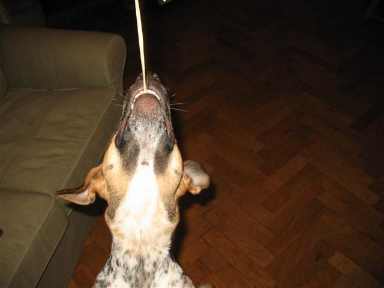
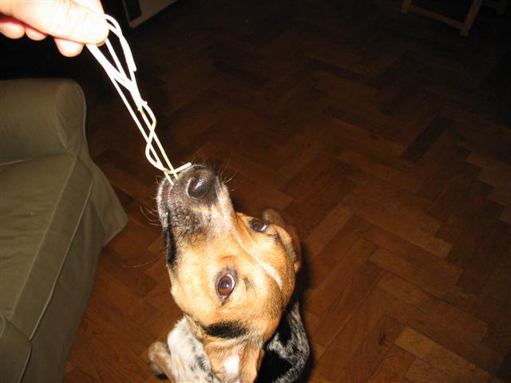
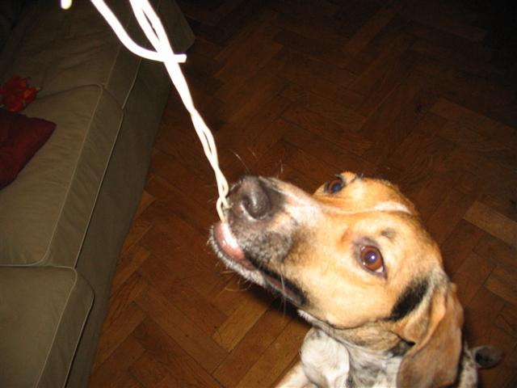
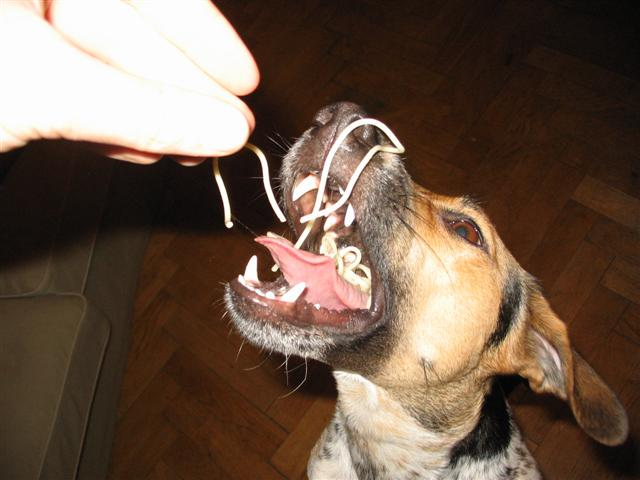
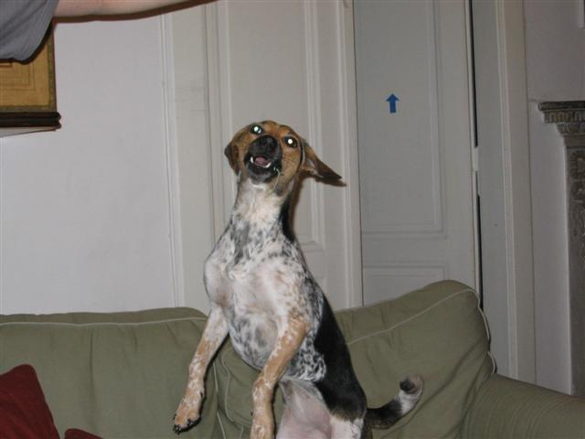
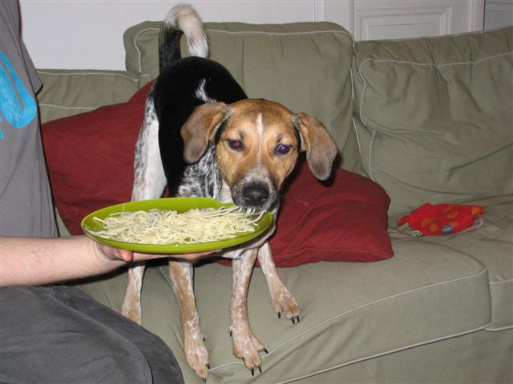
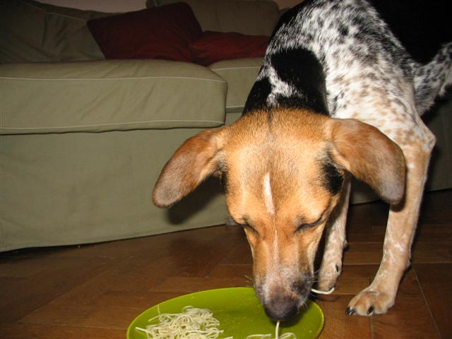

Navigace |
Všechno co je Nela ochotná obětovat špagetám, ale zatím to nebylo veřejně známéKoho jde utáhnout na vařený nudli?  Vídíte ten dravý výraz v očích?
 Už je pověšená:-)
 Strakáčí čelisti:-) I když to vypadá hodně akčně, Nela je opatrná a nehryže.
 AKrobacie na pohovce.
 "Konečně mám talíř u sebe"
 Talíř se vyprazdňuje, v duši se rozléhá klid a mír. 
|